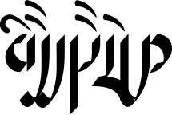

Welcome to Kvelíere, the blog, portfolio, and playground of Collin Brown. You'll find an assortment of
links to my various projects; I mostly write fiction, but I'll also include introductions to a number of
constructed languages of mine, in addition to any worldbuilding notes I want to share. In addition, I'm likely
to publish articles discussing any of my honestly quite ecclectic interests. I'm especially fascinated by
history, linguistics, programming, literature, and any combination thereof.
I program in C++ or C# for the most part, but I have experience with Python and a few other languages. I've
some experience with Unity, but these days I've been working with OpenGL, coding the systems you'd find in the
former from scratch: a better way to learn how they all really work under the hood, I've found. I
particularly enjoy coding the sorts of games I like to play: roguelikes (of the Nethack variety), sims (in the
vein of Dwarf Fortress), and grand strategy games (such as Crusader Kings 2). You can likely glean more of
my personality from this list than I'd like to admit.
As for linguistics, I've reached an intermediate level in Spanish (bienvenidos!) and working to do the same
in Japanese (ようこそ), but I've also spent a little time—read, too little—with French and (even less with)
Arabic. That's not to say those are the only languages with which I'm familiar in terms of phonology or
grammar, only those which I've spent any respectable length of time trying to learn.
Constructing languages is a bit of an obsession of mine: most my work here goes to naturalistic languages,
but I've toyed around with engineered and personal languages.
1
Most recently, I've begun work on a fusional, non-rigidly head-initial language which is meant to phonaesthetically
resemble Northern Sami, Icelandic, and Japanese; the grammar is influenced by Irish and Northern Sami; and the central
writing system is a logography in the vein of Chinese. By the time you're reading this, I'm likely to have some of that
content published here.
2
I recently transitioned to this site, hence its sparseness. Expect more to arrive soon. This shift was honestly mostly
motivated by my desire to have more control over the site as a whole, inspired in no small part by a number of personal
and professional blogs such as S.ai, Gwern.net, and
Lingweenie.org.
Now that I've gotten that out of my system, I'd like to say thanks for reading, and I hope you enjoy.
The image above features the characters for "Mkvíele," the name of the language which I am spending most of
my time with now. This script is fairly heavily influenced by Blackletter, the Tibetan Script (Uchen),
and Hanzi (Chinese) characters (mostly in terms of its underlying structure). Various phonetic and semantic
components combine to indicate the various words which compound to form the endonym for the language.
The character above is a highly stylized rendering of the word "Kvelíere" in this language;
it translates to the "Black Dog," something of a reference to Samuel Johnson's use of the term:
"the black dog I hope always to resist, and in time to drive...."
Letter to Mrs. Thrale, 28 June, 1783.New